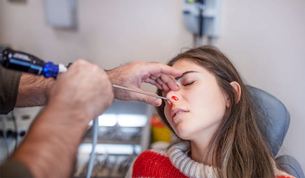
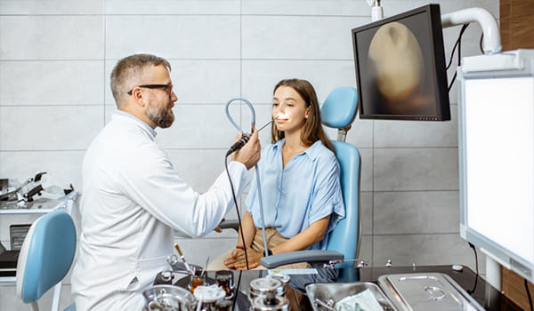

EL DOCTOR JORGE TREVIÑO GARZA
Es un Otorrinolaringólogo en Monterrey que cuenta con especialidad en Cirugía
Plastica Facial, es un medico que constantemente se actualiza con el fin de mejorar sus servicios a
los pacientes.
Servicios del Otorrinolaringologo en Monterrey
- Consultas
- Radiofrecuencia de Cornetes 
- Cirugia Endoscópica para Sinusitis
- Endoscopía Nasal 
- Otorrinolaringología Pediátrica
- Cirugia de Tabique Nasal
Te mereces un alto nivel de atención por parte de un Otorrinolaringologo de Vanguardia
Agenda una consulta por WhatsApp
o mediante una llamada.
Nuestro correo electronico: Jorgetrega@gmail.com
Lunes a Sabado
9:00 a 19:00 hrs
Direccion del Consultorio
Visitanos para que seas atendido con atencion que te mereces en Centro de Especialidades Medicas 1er piso consultorio 126 Jose Benitez No 2704 Colonia Obispado Monterrey NL CP64060.